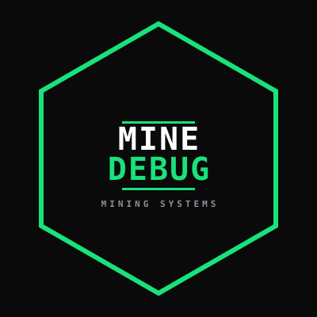
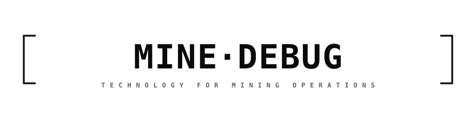
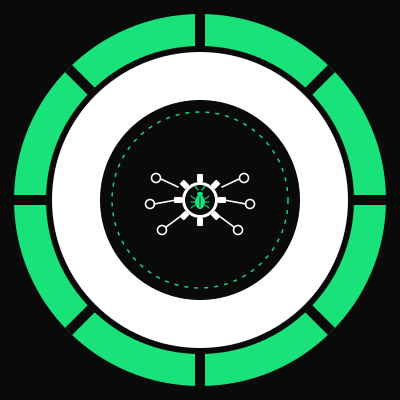

BRAND · LOGO SYSTEM
Logo MineDebug — sistema de marca
Três aplicações para contextos distintos. O emblema principal é a marca canônica; as duas variações dão flexibilidade para usos comerciais e tipográficos.


